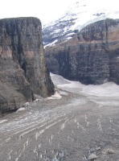

Banff International Research Station
Workshop on Contemporary Schubert Calculus and
Schubert Geometry
March 18 - 23 2007

|  | Banff International Research StationWorkshop on Contemporary Schubert Calculus and
Schubert Geometry
|
|
 Belkale, Prakash,
University of North Carolina.
Billey, Sara,
University of Washington.
Buch, Anders,
Rutgers University.
Carrell, Jim, University of British Columbia.
Chen, Linda, The Ohio State University.
Belkale, Prakash,
University of North Carolina.
Billey, Sara,
University of Washington.
Buch, Anders,
Rutgers University.
Carrell, Jim, University of British Columbia.
Chen, Linda, The Ohio State University.
 Coskun, Izzet, MIT.
Duan, Haibao, Academia Sinica, Beijing, China.
Javier Elizondo, UNAM.
Eremenko, Alex, Purdue University.
Rebecca Goldin, George Mason University.
Harada, Megumi, McMaster University.
Holm, Tara, Cornell University.
Ikeda, Takeshi, Okayama University of Science, Japan.
Joel Kamnitzer, American Institute of Mathematics.
Kaveh, Kiumars, University of Toronto.
Knutson, Allen, University of California, San Diego.
Kuttler, Jochen, University of British Columbia.
Lam, Thomas, Harvard University.
Cristian Lenart, SUNY Albany.
Dianne Maclagan, Rutgers University.
Marchisotto, Elena, California State University, Northridge.
Mare, Liviu, University of Regina.
Mihalcea, Leonardo, Duke University.
Steve Mitchell, University of Washington.
Evgeny Mukhin, Indiana University Purdue University Indianapolis.
Ed Richmond, University of North Carolina.
Nicolas Perrin, Institut de Mathématiques de jussieu.
Purbhoo, Kevin, University of British Columbia.
Ruffo, James, Texas A&M University.
Shimozono, Mark, Virginia Tech.
Sottile, Frank, Texas A&M University.
Tamvakis, Harry, Brandeis University.
Hugh Thomas, University of New Brunswick.
Tymoczko, Julianna, University of Michigan.
Vakil, Ravi, Stanford University.
Varchenko, Sasha, University of North Carolina.
Verschelde, Jan, University of Illinois, Chicago.
Woo, Alexander University of California, Davis.
Yong, Alex, University of Minnesota.
:= Participation confirmed.
:= Participation not yet confirmed.
Coskun, Izzet, MIT.
Duan, Haibao, Academia Sinica, Beijing, China.
Javier Elizondo, UNAM.
Eremenko, Alex, Purdue University.
Rebecca Goldin, George Mason University.
Harada, Megumi, McMaster University.
Holm, Tara, Cornell University.
Ikeda, Takeshi, Okayama University of Science, Japan.
Joel Kamnitzer, American Institute of Mathematics.
Kaveh, Kiumars, University of Toronto.
Knutson, Allen, University of California, San Diego.
Kuttler, Jochen, University of British Columbia.
Lam, Thomas, Harvard University.
Cristian Lenart, SUNY Albany.
Dianne Maclagan, Rutgers University.
Marchisotto, Elena, California State University, Northridge.
Mare, Liviu, University of Regina.
Mihalcea, Leonardo, Duke University.
Steve Mitchell, University of Washington.
Evgeny Mukhin, Indiana University Purdue University Indianapolis.
Ed Richmond, University of North Carolina.
Nicolas Perrin, Institut de Mathématiques de jussieu.
Purbhoo, Kevin, University of British Columbia.
Ruffo, James, Texas A&M University.
Shimozono, Mark, Virginia Tech.
Sottile, Frank, Texas A&M University.
Tamvakis, Harry, Brandeis University.
Hugh Thomas, University of New Brunswick.
Tymoczko, Julianna, University of Michigan.
Vakil, Ravi, Stanford University.
Varchenko, Sasha, University of North Carolina.
Verschelde, Jan, University of Illinois, Chicago.
Woo, Alexander University of California, Davis.
Yong, Alex, University of Minnesota.
:= Participation confirmed.
:= Participation not yet confirmed.
Schubert calculus originally meant the calculus of enumerative geometry, which
is the art of counting geometric figures determined by given incidence
conditions. This was developed in the 19th century and presented in the
classic treatise "Kälkul der abzählanden Geometrie" by Herman
Cäser
Hannibal Schubert in 1879. Schubert, Pieri, and Giambelli subsequently
developed algorithms to solve enumerative geometric problems concerning linear
subspaces of vector spaces, which we now understand to be computations in the
cohomology ring of a Grassmannian. Their vision and technical skill exceeded
the foundations of this subject, and Hilbert, in his 15th problem, asked for a
rigorous foundation. This was largely completed by the middle
of the 20th century, a centerpiece being the cohomology of Grassmannians.
By the 1950's it was discovered that the cohomology ring of the Grassmannian,
with its natural geometric Schubert basis, was essentially the same as the
algebra of symmetric functions, with its Schur basis. These are also
essentially the same as the representation ring of the general linear group,
with its basis of irreducible Weyl modules. In particular, the multiplication
in the geometric Schubert basis of cohomology was governed by the
combinatorial Littlewood-Richardson rule (which was only proved in the 1970's).
These Schubert classes correspond to Schubert varieties in the Grassmannian,
and Chevalley showed how there are natural Schubert varieties for any
algebraic homogeneous space, thus pointing out a deep connection to algebraic
groups. In the last 20 years, the Schubert calculus has come to refer to the
study of the geometric, combinatoric, and algebraic aspects of the Schubert
basis in various cohomology settings, and its relation to the rest of
mathematics.
The past ten years have seen an explosion of progress in the subject. A major
impetus for this resurgence was a meeting at Oberwolfach in 1997 at which some
people from combinatorics and geometry met each other for the first time.
Since then, there has been a flood of important work in this area by Buch,
Eremenko-Gabrielov, Knutson-Tao, Vakil, Knutson-Miller-Shimozono and many, many
others. For example,
Coskun recently announced a solution to the long-standing
Littlewood-Richardson problem for the quantum cohomology of a
Grassmannian.
This meeting at Banff in 2007, 10 years after the Oberwolfach meeting,
is intended to assess this recent progress and chart the course for the next
decade.